NumPy 矩阵乘法
原文：https://www.studytonight.com/numpy/numpy-matrix-multiplication
在本教程中，我们将介绍 NumPy 库中两个矩阵的乘法的概念。另外，由于 NumPy 库主要用于操作和数组处理，所以这是一个非常重要的概念。
在 NumPy 中，矩阵 的乘法基本上是一种运算，我们将两个矩阵作为输入和将第一个矩阵的行乘以第二个矩阵的列，产生一个单个矩阵作为输出。但是有一点很重要，我们要保证，那就是第一个矩阵的行数应该是等于第二个矩阵的列数。
Numpy 中矩阵相乘的过程俗称矢量化。矢量化过程的主要目标是减少循环使用来执行此类操作。当程序中跳过for循环的使用时，将减少代码的整体执行时间。
**让我们向您展示矩阵乘法的图像，然后我们将继续讨论矩阵乘法的不同方法:
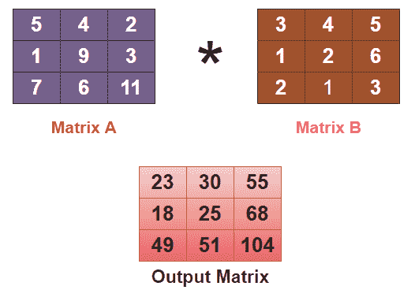
矩阵乘法的不同方法
NumPy 中主要有三种不同的矩阵乘法方法，如下所示:
使用
multiply()函数 该函数将返回两个给定数组的元素乘法。使用
matmul()函数 该函数将返回两个输入数组的矩阵乘积。使用
dot()函数 该函数将返回两个给定数组的标量或点积。
现在我们将一个接一个地详细理解上面给出的每一种方法。
1.使用multiply()功能
当我们要做两个数组的乘法运算时，使用numpy.multiply()函数。该方法将返回arr1和arr2的乘积，乘法按元素进行。
如果，矩阵 A 为:
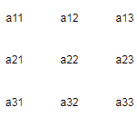
并且，矩阵 B 是:
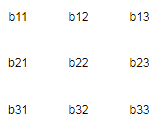
然后， A*B 将这样计算:
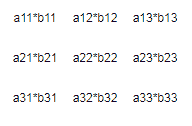
numpy.multiply()的语法:
使用该函数所需的语法如下:
numpy.multiply(arr1, arr2, /, out, *, where, casting, order, dtype=None, subok=True[, signature, extobj], ufunc ‘multiply’)
让我们讨论上面给出的参数:
arr1 该参数用于指示第一个输入数组。
arr2 该参数用于指示第二个 nput 数组。
数据类型 该参数用于指示返回数组的类型。
出 该参数主要指定结果存储的位置。
如果提供了这个参数，那么它必须有一个可以存储乘法结果的形状。
如果未提供此参数或无，在这种情况下，将返回新分配的数组。
其中 在该参数中，真值表示计算该位置的
ufunc，如果是假值，则将该值单独留在输出中。**kwargs 该参数允许向函数传递键值对。
基本示例:
下面我们有一个代码片段，涵盖了用于 NumPy 中矩阵乘法的multiply()函数:
import numpy as np
a = np.array([[11,2,23],[14,75,6],[17,8,9]], ndmin=3)
print("A is:\n",a)
b = np.array([[9,8,7],[6,5,4],[3,2,1]], ndmin=3)
print("B is:\n",b)
out = np.multiply(a,b)
print("The resultant matrix is :")
print(out)
上述代码的输出将是:
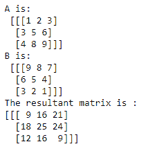
2.使用matmul()功能
NumPy 库中的matmul()函数用于返回两个给定数组的矩阵乘积。
如果，矩阵 A 为:
并且，矩阵 B 是:
然后， A*B 使用matmul()函数会这样计算:
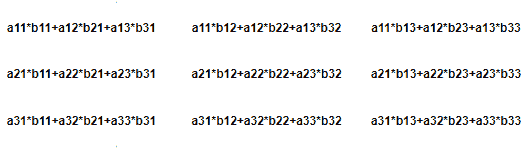
matmul()的语法:
使用该函数所需的语法如下:
np.matmul(array a, array b)
值得注意的是，当它返回二维数组的标准乘积时，如果任一给定数组的维数为 > 2 ，则它被视为位于最后两个索引中的矩阵的堆栈，并被相应地广播。另一方面，如果任一参数是 1-D 数组，则通过在其维度上附加 1 将其提升为矩阵，该矩阵在乘法后被移除。
例 1:
在下面的例子中，我们使用了matmul()函数进行矩阵乘法:
import numpy as np
A = np.array([[1,2,3], [4,5,6],[1,2,1]])
B = np.array([[1,1,1], [0,1,0], [1,1,1]])
print("Matrix A is:\n",A)
print("Matrix A is:\n",B)
C = np.matmul(A,B)
print("The Matrix multiplication of matrix A and B is:\n",C)
上述代码的输出将是:
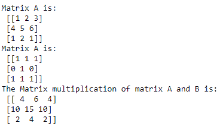
例 2:
让我们举另一个例子，其中被相乘的两个阵列(矩阵)具有不同的维度:
import numpy.matlib
import numpy as np
a = [[1,4],[2,1]]
print("A is",a)
b = [1,2]
print("B is",b)
print("AxB is")
print(np.matmul(a,b))
print("BxA is ")
print (np.matmul(b,a))
A 为[[1，4]，[2，1]] B 为[1，2] AxB 为 【9 4】 BxA 为 【5 6】
3.使用dot()功能
在 NumPy 库中使用dot()函数的任意两个给定矩阵的点积基本上就是它们的矩阵积。唯一的主要区别是在点积中，我们也可以有标量值。因此两个矩阵的点积也被称为标量积。
numpy.dot()的语法:
使用该函数所需的语法如下:
numpy.dot(a, b, out=None)
如果，矩阵 A 为:
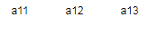
而矩阵 B 是，
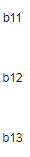
A 和 B 的点积计算如下:
A.B = a11*b11 + a12*b12 + a13*b13
现在让我们举几个代码示例来看看这是如何实现的。
例 1:
通过下面给出的例子，我们将说明两个一维矩阵的点积:
import numpy as np
A = np.array([7,9,8])
B = np.array([2,5,6])
print("Matrix A is:\n", A)
print("Matrix A is:\n", B)
C = np.dot(A,B)
print("Dot product of matrix A and B is:\n", C)
矩阵 A 为: 【7 9 8】 矩阵 A 为: 【2 5 6】 矩阵 A 与 B 的点积为: 107
例 2:
在下面给出的例子中，我们将说明两个二维矩阵的点积:
import numpy as np
A = np.array([[1,4],[3,1]])
B = np.array([[4,5],[6,5]])
print("Matrix A is:\n", A)
print("Matrix A is:\n", B)
C = np.dot(A, B)
print("Matrix multiplication of matrix A and B is:\n", C)
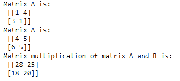
例 3:
在下面给出的例子中，我们将说明一个标量值和一个二维矩阵的点积:
A = np.array([[2,4],[3,5]])
print("Matrix A is:\n", A)
C = np.dot(3, A)
print("Matrix multiplication of matrix A with scalar :\n", C)
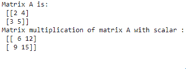
摘要
在本教程中，我们介绍了矩阵乘法的不同方法。我们介绍了multiply()函数、matmul()函数和dot()函数的语法，以及这些函数的多个代码示例。